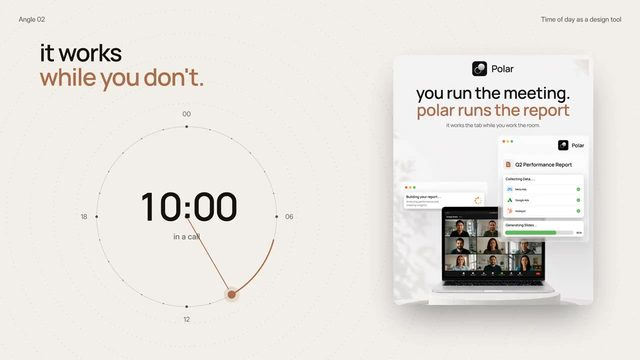
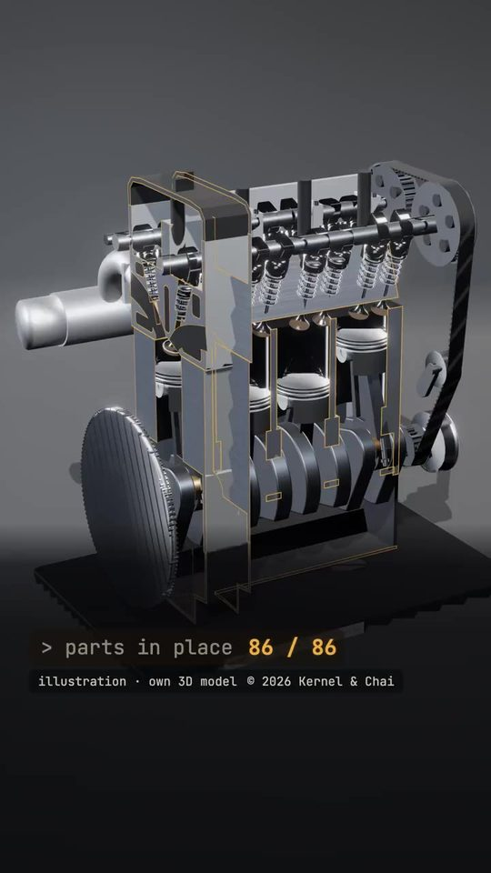
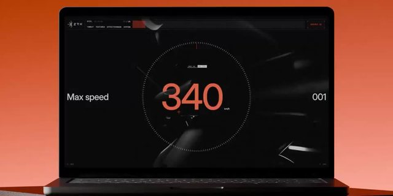
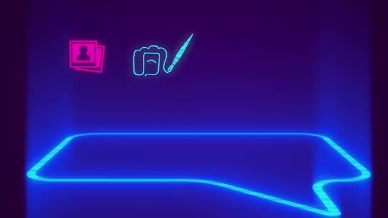
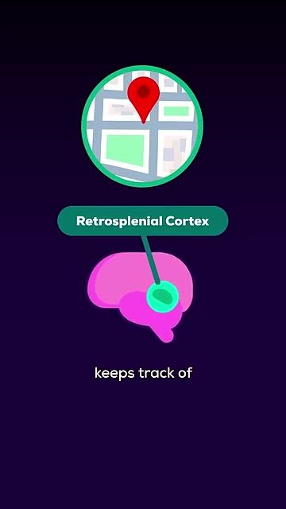
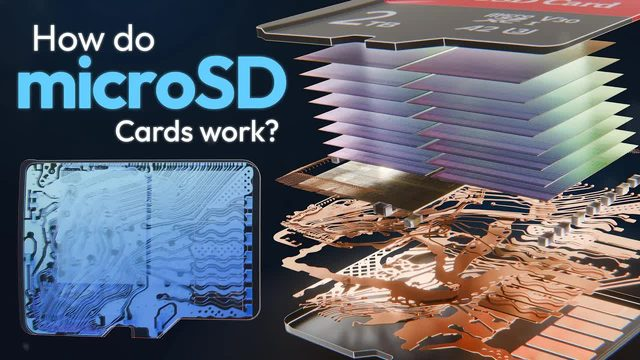

鱼知道 · 审美雷达周一至周六 15:00 · 周日精选
审美日报
动效、片头片尾、转场和节奏
每天挑 10 条视频制作上值得借的作品，先看过再选。点封面直接播放，喜欢就点心。
最新

2026-11-28 审美日报
今天周六，按轮换本该拆字体片头或自由位。当天能看到的片头里，Midnight 是个人项目的二维插画，Prägen Hätlen 的官方成片只有 8 秒快剪，所以改拆质感最好、也最好搬到讲解视频里的自由位：Trizz 为 TaylorMade 做的 32 秒产品片 It's a Beautiful Machine。看片工具已完整看完。值得学的是：先用特写滑过金属和刻字，不要急着给产品全貌；中间用一道电光蓝扫过杆面和背部结构；最后镜头定住，再出标题。国外信源扫过之后，合格新作 4 条，不够 10 条，不硬凑。点赞接口里，11-22 周精选的 activate card interaction 从「无」变成了踩，已写入「不喜欢」；今天没有新评论。
技巧学习
技巧学习
噪声晃动、错开编排、形变遮罩、视差、一拍二、着色器转场、光扫过……每个进阶动效技巧配典型案例：在片子哪一秒、怎么做、Remotion / Three.js 里怎么写。
全部
- 2026-11-28 审美日报2026-11-28 周六 · 4 条
 2026-11-27 审美日报2026-11-27 周五 · 8 条
2026-11-27 审美日报2026-11-27 周五 · 8 条 2026-11-26 审美日报2026-11-26 周四 · 7 条
2026-11-26 审美日报2026-11-26 周四 · 7 条
2026-11-25 审美日报2026-11-25 周三 · 6 条 2026-11-24 审美日报2026-11-24 周二 · 5 条
2026-11-24 审美日报2026-11-24 周二 · 5 条 2026-11-23 审美日报2026-11-23 周一 · 6 条
2026-11-23 审美日报2026-11-23 周一 · 6 条- 周精选2026-11-22 审美周精选2026-11-22 周日 · 10 条 · 精选
 2026-11-21 审美日报2026-11-21 周六 · 6 条
2026-11-21 审美日报2026-11-21 周六 · 6 条 2026-11-20 审美日报2026-11-20 周五 · 7 条
2026-11-20 审美日报2026-11-20 周五 · 7 条- 2026-11-19 审美日报2026-11-19 周四 · 8 条
 2026-11-18 审美日报2026-11-18 周三 · 6 条
2026-11-18 审美日报2026-11-18 周三 · 6 条 2026-11-17 审美日报2026-11-17 周二 · 10 条
2026-11-17 审美日报2026-11-17 周二 · 10 条 2026-11-16 审美日报2026-11-16 周一 · 9 条
2026-11-16 审美日报2026-11-16 周一 · 9 条 周精选2026-11-15 审美周精选2026-11-15 周日 · 10 条 · 精选
周精选2026-11-15 审美周精选2026-11-15 周日 · 10 条 · 精选 2026-11-14 审美日报2026-11-14 周六 · 10 条
2026-11-14 审美日报2026-11-14 周六 · 10 条 2026-11-13 审美日报2026-11-13 周五 · 10 条
2026-11-13 审美日报2026-11-13 周五 · 10 条 2026-11-12 审美日报2026-11-12 周四 · 10 条
2026-11-12 审美日报2026-11-12 周四 · 10 条
2026-11-11 审美日报2026-11-11 周三 · 10 条
2026-11-10 审美日报2026-11-10 周二 · 10 条 2026-11-09 审美日报2026-11-09 周一 · 10 条
2026-11-09 审美日报2026-11-09 周一 · 10 条 周精选2026-11-08 审美周精选2026-11-08 周日 · 10 条 · 精选
周精选2026-11-08 审美周精选2026-11-08 周日 · 10 条 · 精选 2026-11-07 审美日报2026-11-07 周六 · 10 条
2026-11-07 审美日报2026-11-07 周六 · 10 条
2026-11-06 审美日报2026-11-06 周五 · 10 条- 2026-11-05 审美日报2026-11-05 周四 · 10 条
 2026-11-04 审美日报2026-11-04 周三 · 10 条
2026-11-04 审美日报2026-11-04 周三 · 10 条 2026-11-03 审美日报2026-11-03 周二 · 10 条
2026-11-03 审美日报2026-11-03 周二 · 10 条 2026-11-02 审美日报2026-11-02 周一 · 10 条
2026-11-02 审美日报2026-11-02 周一 · 10 条- 周精选2026-11-01 审美周精选2026-11-01 周日 · 10 条 · 精选

2026-10-31 审美日报2026-10-31 周六 · 10 条
2026-10-30 审美日报2026-10-30 周五 · 10 条 2026-10-29 审美日报2026-10-29 周四 · 10 条
2026-10-29 审美日报2026-10-29 周四 · 10 条 2026-10-28 审美日报2026-10-28 周三 · 10 条
2026-10-28 审美日报2026-10-28 周三 · 10 条 2026-10-27 审美日报2026-10-27 周二 · 10 条
2026-10-27 审美日报2026-10-27 周二 · 10 条 2026-10-26 审美日报2026-10-26 周一 · 10 条
2026-10-26 审美日报2026-10-26 周一 · 10 条 周精选2026-10-25 审美周精选2026-10-25 周日 · 5 条 · 精选
周精选2026-10-25 审美周精选2026-10-25 周日 · 5 条 · 精选 2026-10-24 审美日报2026-10-24 周六 · 6 条
2026-10-24 审美日报2026-10-24 周六 · 6 条